Mejores peliculas 2024
| 1 | Attack on Titan: The Last Attack | 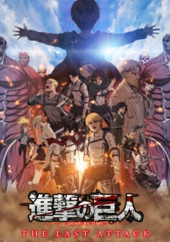 |
|---|---|---|
| 2 | Dune: Parte Dos |  |
| 3 | Memorias de un caracol | 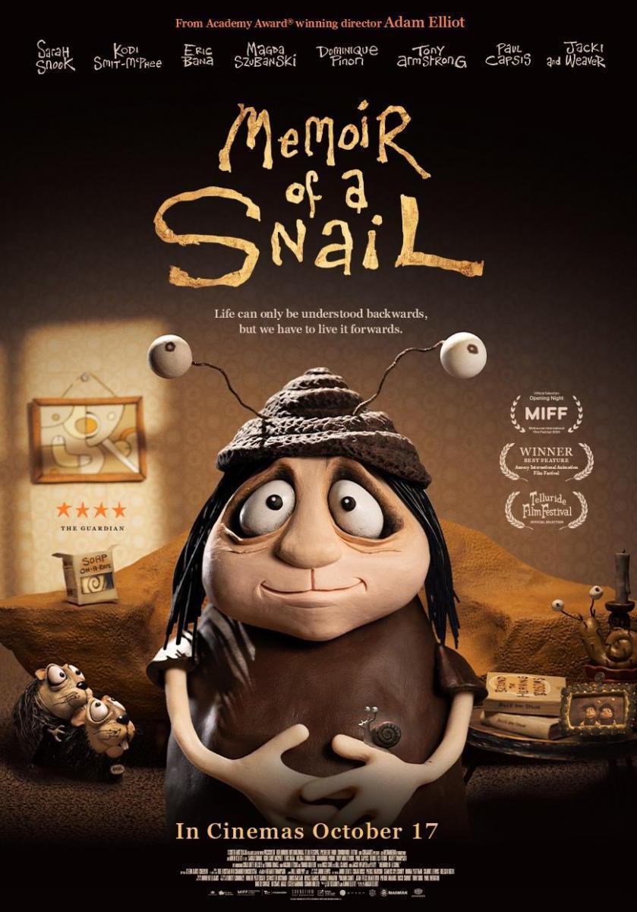 |
| 4 | Robot salvaje | 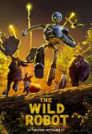 |
| 5 | Solo Leveling: ReAwakening | 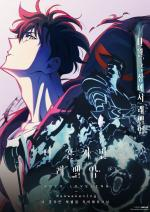 |
| 6 | Aún estoy aquí | 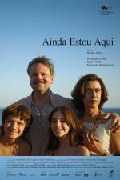 |
| 7 | La historia de Souleymane | 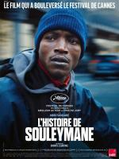 |
| 8 | Better Man | 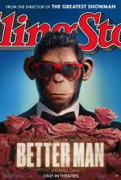 |
| 9 | Cómo hacerse millonario antes de que muera la abuela | 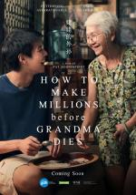 |
| 10 | Flow, un mundo que salvar | 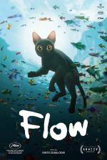 |
Los estrenos más esperados del 2025
'Better Man' (Michael Gracey)
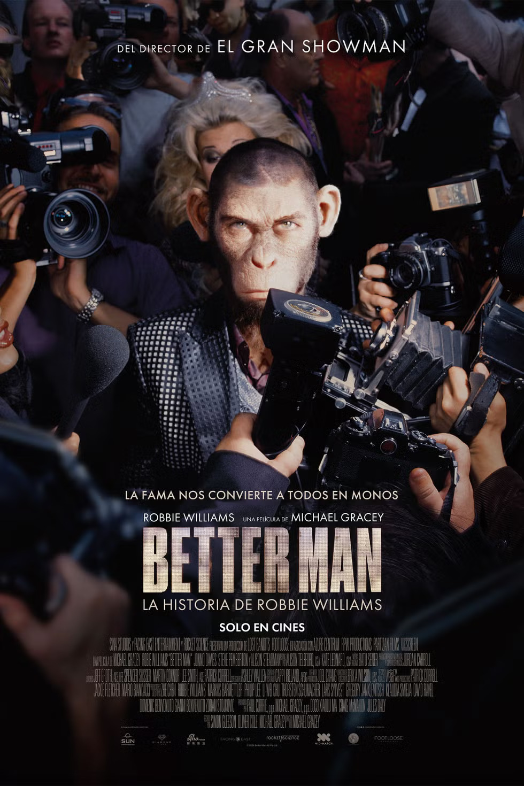La crítica de 'Better Man' de Fotogramas lo tiene claro: "Solo Michael Gracey, director de la extremadamente kitsch ‘El gran showman’ (2017), podría haber colado a la industria un biopic musical como esta ‘Better Man’ que nos ocupa, un repaso a la exitosa y turbulenta juventud musical de Robbie Williams en una película tan formulaica como experimental gracias (en exclusiva) a su protagonista: un mono."
Para los que dicen que los biopics son siempre iguales, cortados por el mismo patrón... No te arrepentirás.
'Las vidas de Sing Sing' (Greg Kwedar)
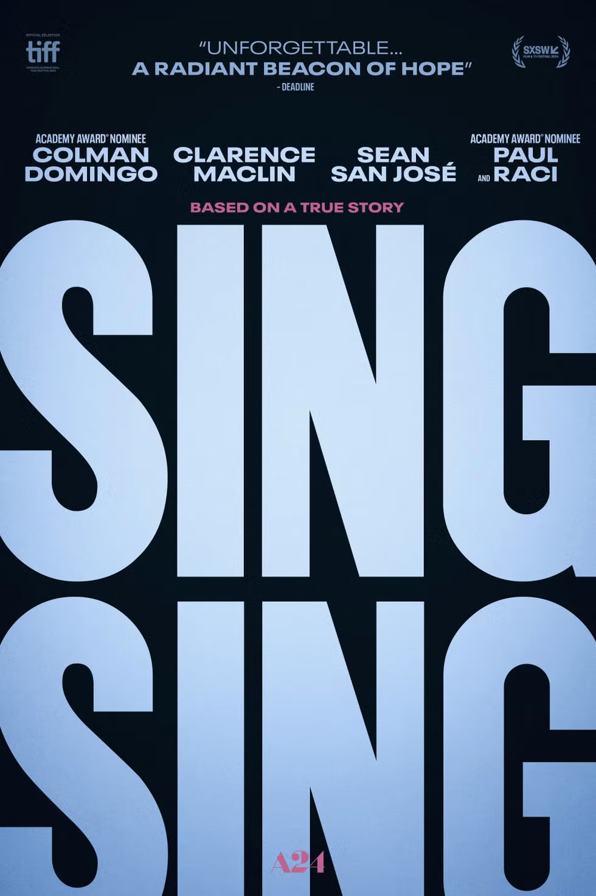Un pequeño grupo de presos encarcelados en el Centro Correccional Sing Sing, una de las prisiones de máxima seguridad más famosas del mundo, se propone montar su propia obra teatral como parte de un taller de teatro. Con Colman Domingo, ya podrán.
Nuestra crítica de 'Las vidas de Sing Sing' afirma que " no busca darnos un mensaje, sino hacernos partícipes de la grandeza del arte, acaso el último refugio de la bondad, el arrepentimiento y la humanidad."
Mejores series 2024
| 1 | Samuel | 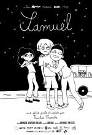 |
|---|---|---|
| 2 | Querer | |
| 3 | Yo, adicto | |
| 4 | Ripley | 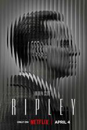 |
| 5 | X-Men '97 | 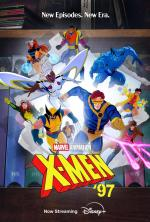 |
| 6 | Los años nuevos | |
| 7 | Cien años de soledad | |
| 8 | Bluey: Cortos | 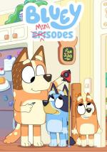 |
| 9 | Dan Da Dan | 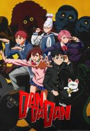 |
| 10 | Shôgun |